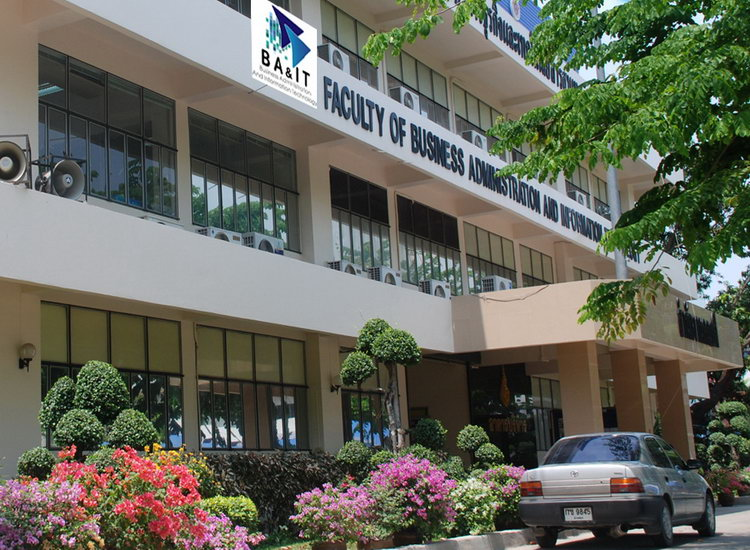
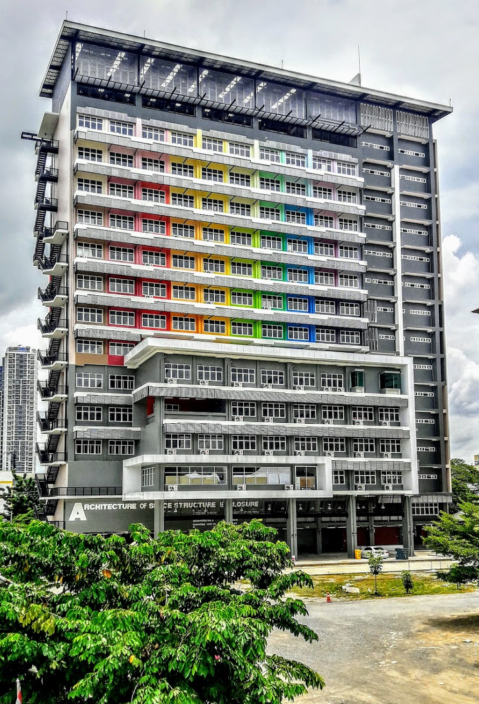

ประวัติของมหาวิทยาลัย
แต่เดิมพื้นที่จัดการศึกษา จำนวน ๓ แห่งของมหาวิทยาลัยเทคโนโลยีราชมงคลสุวรรณภูมิ เป็นวิทยาลัยในสังกัดกรมอาชีวศึกษา ประกอบด้วย วิทยาลัยเกษตรกรรมพระนครศรีอยุธยา วิทยาลัยพณิชยการพระนครศรีอยุธยา และวิทยาลัยเทคนิคนนทบุรี ซึ่งต่อมาในปี
พ.ศ.๒๕๒๐ได้มีพระราชบัญญัติโอนกิจการบางส่วนของกรมอาชีวศึกษาไปเป็นของวิทยาลัย
เทคโนโลยีและอาชีวศึกษารวม ๒๘ แห่ง ซึ่งรวมวิทยาลัยทั้ง ๓ แห่ง ดังกล่าวด้วย พร้อมกันนี้รัฐมนตรีว่าการกระทรวงศึกษาธิการได้ออกประกาศกระทรวงศึกษาธิการเปลี่ยนชื่อ
สถานศึกษาและตั้งเป็นวิทยาเขตทั้ง ๒๘ แห่งในปีเดียวกัน
ดังนั้น วิทยาเขตเกษตรพระนครศรีอยุธยา วิทยาเขตพณิชยการพระนครศรีอยุธยา และวิทยาเขตเทคนิคนนทบุรี จึงสังกัดวิทยาลัยเทคโนโลยีและอาชีวศึกษา ซึ่งมีฐานะเป็นกรมในสังกัดกระทรวงศึกษาธิการ ตั้งแต่ปี พ.ศ. ๒๕๒๐ เป็นต้นมา ต่อมาในปี ๒๕๓๑ พระบาทสมเด็จพระเจ้าอยู่หัวทรงพระกรุณาโปรดเกล้าฯ พระราชทานชื่อใหม่ว่า “สถาบันเทคโนโลยีราชมงคล” และต่อมาในปี พ.ศ. ๒๕๓๒ กระทรวงศึกษาธิการได้มีประกาศเปลี่ยนชื่อวิทยาเขตในสังกัดสถาบันเทคโนโลยีราชมงคล เฉพาะวิทยาเขตในส่วนภูมิภาค รวม ๑๗ วิทยาเขต ส่งผลให้ ทั้ง ๓ วิทยาเขตเปลี่ยนชื่อใหม่เป็น วิทยาเขตพระนครศรีอยุธยา หันตรา วิทยาเขตพระนครศรีอยุธยาวาสุกรี และวิทยาเขตนนทบุรี ตามลำดับ ต่อมาในปี พ.ศ. ๒๕๓๘ ได้มีประกาศจัดตั้งวิทยาเขตสังกัดสถาบันเทคโนโลยีราชมงคล จำนวน ๕ แห่ง คือวิทยาเขตเชียงราย วิทยาเขตสกลนคร วิทยาเขตสุพรรณบุรี วิทยาเขตศาลายา และวิทยาเขตศรีวิชัย นับเป็นจุดเริ่มต้นของการก่อกำเนิด วิทยาเขตสุพรรณบุรีซึ่งเป็นพื้นที่จัดการศึกษา แห่งที่ ๔ ของมหาวิทยาลัยเทคโนโลยีราชมงคลสุวรรณภูมิ ดังที่กล่าวไว้ข้างต้น สถาบันเทคโนโลยีราชมงคล ได้ขยายการศึกษาออกไปในส่วนภูมิภาคต่าง ๆ จนถึง ๓๕ วิทยาเขต รวมทั้งมีศูนย์กลางการจัดการศึกษาระดับปริญญาตรี ซึ่งตั้งอยู่ที่ตำบลคลองหก อำเภอคลองหลวง จังหวัดปทุมธานี และมีการจัดการศึกษาระดับต่ำกว่าปริญญาตรีและปริญญาตรี ในทุกวิทยาเขต
ประวัติความเป็นมาของวิทยาเขตพระนครศรีอยุธยา
ในปี พ.ศ. ๒๔๘๓ ได้เปลี่ยนชื่อเป็น โรงเรียนเกษตรกรรมอยุธยา และรับนักเรียนจบชั้นประถมศึกษาปีที่ ๔ มาเรียนต่ออีก ๒ ปี และอบรมเพิ่มเติมอีก ๑ ปี จนกระทั่งปี พ.ศ. ๒๔๘๗ ได้ขยายเปิดรับนักเรียนเกษตรกรรมชั้นกลาง (มีสิทธิเทียบเท่ากับนักเรียนที่จบหลักสูตรครูมูลหรือ ม. ๖ ในสมัยนั้น) ในปี พ.ศ. ๒๕๐๔ ได้ขยายการจัดการเรียนการสอนมาเป็นหลักสูตร ประโยคอาชีวชั้นสูง แผนกเกษตรกรรม (ม.ศ. ๖ แผนกเกษตรกรรม) และในปี พ.ศ. ๒๕๐๘ ได้ขยายการจัดการเรียนการสอนมาเป็นหลักสูตรประกาศนียบัตรวิชาชีพชั้นสูง (ปวส.) แผนกเกษตรกรรม และยกฐานะเป็นวิทยาลัยเกษตรกรรม สังกัดกรมอาชีวศึกษา กระทรวงศึกษาธิการชื่อวิทยาลัยเกษตรพระนครศรีอยุธยา รวมทั้งปรับปรุงหลักสูตร ม.ศ. ๖ แผนกเกษตรกรรม เป็นหลักสูตรประโยควิชาชีพ (ปวช.) ในปีเดียวกันนี้มีการย้ายสถานที่ตั้งของวิทยาเขตฯ มา ณ ตำบลหันตรา อำเภอพระนครศรีอยุธยา จังหวัดพระนครศรีอยุธยา ซึ่งในระยะแรกใช้พื้นที่ทั้งสองส่วนคือตำบลประตูชัย และตำบลหันตรา ในการจัดการเรียนการสอน จนกระทั่งปี พ.ศ. ๒๕๒๙ ได้ย้ายส่วนของการเรียนการสอนมา ณ ตำบลหันตรา และได้จัดการศึกษาลักษณะโพลีเทคนิค โดยเปิดสอนหลักสูตร ปวส. สาขาเทคโนโลยีเครื่องจักรกลเกษตร ต่อมาในปี พ.ศ. ๒๕๓๑ วิทยาลัยเทคโนโลยีและอาชีวศึกษาได้รับพระราชทานนามใหม่ว่า สถาบันเทคโนโลยีราชมงคล และได้เปลี่ยนชื่อวิทยาเขตเกษตรพระนครศรีอยุธยาเป็น “วิทยาเขตพระนครศรีอยุธยา หันตรา” รวมทั้งได้ขยายการจัดการศึกษาถึงระดับปริญญาตรีจวบจนถึงปัจจุบันนี้
ประวัติความเป็นมาของวิทยาเขตพระนครศรีอยุธยา วาสุกรี
พระนครศรีอยุธยา วาสุกรี ตั้งอยู่เลขที่ ๑๙ หมู่ ๓ ถนนอู่ทอง ตำบลท่าวาสุกรี อำเภอพระนครศรีอยุธยา จังหวัดพระนครศรีอยุธยา เดิมเป็นโรงเรียนการช่างสตรี ตั้งขึ้นเมื่อปี พ.ศ. ๒๔๘๑ โดยเปิดสอนชั้นมัธยมการช่างสตรี ในปี พ.ศ. ๒๔๙๕ และต่อมามีการเปิดสอนระดับอาชีวศึกษาชั้นสูง ในปี พ.ศ. ๒๕๐๒ วันที่ ๑๘ เมษายน พ.ศ. ๒๕๐๙
โรงเรียนการช่างสตรีได้เปิดสอนวิชาพณิชยการเพื่อตอบสนองความต้องการของตลาดแรงงาน โดยเปลี่ยนจากโรงเรียนการช่างสตรีเป็นโรงเรียนพณิชยการชื่อว่า โรงเรียนพณิชยการวาสุกรี สังกัดกรมอาชีวศึกษา กระทรวงศึกษาธิการ เมื่อวันที่ ๑๙ มีนาคม พ.ศ. ๒๕๒๐ ได้โอนจากกรมอาชีวศึกษาไปสังกัดวิทยาบัยเทคโนโลยีและอาชีวศึกษา โดยเปลี่ยนชื่อเป็น วิทยาลัยเทคโนโลยีและอาชีวศึกษา วิทยาเขตพระนครศรีอยุธยา ปี พ.ศ. ๒๕๓๐ สภาวิทยาลัย เทคโนโลยีและอาชีวศึกษา ได้อนุมัติให้เปิดสอนระดับปริญญาตรีสาขาบริหารธุรกิจ วิชาเอกการบัญชีหลักสูตร ๒ ปีต่อเนื่อง นับเป็นการศึกษาระดับปริญญาตรีรุ่นแรก วันที่ ๑๕ กันยายน พ.ศ. ๒๕๓๑ วิทยาลัยเทคโนโลยีและอาชีวศึกษา ได้พระราชทานนามใหม่ว่า สถาบันเทคโนโลยีราชมงคล และเมื่อวันที่ ๑๑ กรกฎาคม พ.ศ. ๒๕๓๒ วิทยาเขตพณิชยการพระนครศรีอยุธยาได้เปลี่ยนชื่อเป็น วิทยาเขตพระนครศรีอยุธยา วาสุกรี ตามที่ตั้งจนถึงปัจจุบัน

ประวัติความเป็นมาของวิทยาเขตนนทบุรี วิทยาเขตนนทบุรี
แรกเริ่มก่อตั้ง มีสถานศึกษาอยู่ ๒ แห่ง จนกระทั่งปี พ.ศ. ๒๕๑๘ กรมอาชีวศึกษา กระทรวงศึกษาธิการ ได้ประกาศให้รวมโรงเรียนช่างกลนนทบุรีและโรงเรียน การช่างนนทบุรีเป็นวิทยาลัยเทคนิคนนทบุรี ซึ่ง ๒ โรงเรียนนี้ ตั้งอยู่ ถนนนนทบุรี ๑ อำเภอเมืองนนทบุรี จังหวัดนนทบุรีอยู่ห่างกันประมาณ ๑ กิโลเมตร
ต่อมาได้โอนมาสังกัดวิทยาลัยเทคโนโลยีและอาชีวศึกษา วิทยาลัยเทคนิคนนทบุรี มีพื้นที่จัดการศึกษา ๒ เขต คือ ๑. เขตเหนือ อยู่ตรงข้ามวัดแจ้งศิริสัมพันธ์ ถนนนนทบุรี ๑ ตำบลบางกระสอ อำเภอเมือง จังหวัดนนทบุรี ๒. เขตใต้ อยู่ติดกับวัดท้ายเมือง ถนนนนทบุรี ๑ ตำบลสวนใหญ่ อำเภอเมือง จังหวัดนนทบุรี วิทยาเขตฯ เปิดสอนหลักสูตรระดับประกาศนียบัตรวิชาชีพชั้นสูง (ปวส.) หลักสูตร ๒ ปี รอบบ่าย แผนกช่างเครื่องกล ช่างกลโรงงาน ช่างโลหะ ช่างไฟฟ้ากำลัง ช่างอิเล็กทรอนิกส์ ช่างโยธา ต่อมาในปี พ.ศ. ๒๕๒๐ กระทรวงศึกษาธิการดำเนินการโอนวิทยาลัยเทคนิคนนทบุรีมาสังกัดวิทยาลัยเทคโนโลยี และอาชีวศึกษาและให้ชื่อใหม่ว่า “วิทยาลัยเทคโนโลยีและอาชีวศึกษา วิทยาเขตเทคนิคนนทบุรี” เปิดสอนหลักสูตรระดับประกาศนียบัตร (ปวช.) และระดับประกาศนียบัตรวิชาชีพชั้นสูง (ปวส.) ซึ่งรับจากผู้สำเร็จการศึกษาระดับ ปวช. เมื่อวันที่ ๑๕ กันยายน ๒๕๓๒ สถาบันเทคโนโลยีราชมงคล ได้ประกาศเปลี่ยนชื่อวิทยาเขตเทคนิคนนทบุรีใหม่เป็น “วิทยาเขตนนทบุรี” และได้ขยายการจัดการศึกษา ถึงระดับปริญญาตรีจวบจนถึงปัจจุบัน

ประวัติความเป็นมาของวิทยาเขตสุพรรณบุรี วิทยาเขตสุพรรณบุรี
เป็นสถาบันการศึกษาสายวิชาชีพ สังกัดสถาบันเทคโนโลยีราชมงคลกระทรวงศึกษาธิการ ได้เริ่มดำเนินการก่อตั้งเมื่อ พ.ศ. ๒๕๓๖ จากแนวความคิดของ ฯพณฯ บรรหาร ศิลปอาชา นายกรัฐมนตรีคนที่ ๒๑ ของประเทศ ซึ่งเป็นสมาชิกสภาผู้แทนราษฎรจังหวัดสุพรรณบุรีในขณะนั้น ได้ร้องขอให้กระทรวงศึกษาธิการจัดตั้ง สถาบันการศึกษาระดับสูง สังกัดสถาบันเทคโนโลยีราชมงคลที่จังหวัดสุพรรณบุรี
ด้วยพิจารณาเห็นว่าสถาบันเทคโนโลยีราชมงคล เป็นสถาบันการศึกษาที่มีความหลากหลายในการจัดการเรียน การสอนสาขาวิชาชีพ ทั้งในระดับต่ำกว่าปริญญา และปริญญาตรี ทั้งนี้เพื่อเป็นการรองรับการขยายตัวทางด้านอุตสาหกรรมในภูมิภาคตะวันตกของประเทศไทย ซึ่งจังหวัดสุพรรณบุรีมีเส้นทางในการคมนาคมที่สะดวกและติดต่อกับจังหวัดที่มีความเจริญด้านอุตสาหกรรม
เช่น กาญจนบุรี นครปฐม ราชบุรี อ่างทอง สิงห์บุรี พระนครศรีอยุธยา ชัยนาท และเพื่อเป็นการกระจายโอกาสทางการศึกษาออกสู่ชนบท ได้ประกอบพิธีวางศิลาฤกษ์ เมื่อวันที่ ๒๕ พฤษภาคม
พ.ศ. ๒๕๓๙ โดย ฯพณฯ บรรหาร ศิลปอาชา นายกรัฐนมตรีคนที่ ๒๑ ของประเทศไทย สถาบันเทคโนโลยีราชมงคล วิทยาเขตสุพรรณบุรี มีพื้นที่แบ่งเป็น ๒ เขต คือ เขตที่ ๑ มีพื้นที่ ประมาณ ๑๐๓ ไร่ ตั้งอยู่เลขที่ ๔๕๐ หมู่ ๖ ถนนสุพรรณบุรี-ชัยนาท ตำบลย่านยาว อำเภอสามชุก จังหวัดสุพรรณบุรี เป็นพื้นที่จัดการเรียนการสอนในคณะวิชาบริหารธุรกิจ คณะวิชาไฟฟ้า คณะวิชาโยธา และเขตที่ ๒ มีพื้นที่ ๔๐๑ ไร่ อยู่ห่างจากพื้นที่ เขตที่ ๑ ประมาณ ๒ กม. เป็นพื้นที่จัดการเรียนการสอนในคณะวิชาไฟฟ้าและคณะวิชาเครื่องกล เริ่มเปิดรับนักศึกษาระดับ ปริญญาตรี ตั้งแต่ปีการศึกษา ๒๕๔๒ เป็นต้นมา